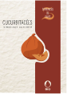
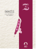
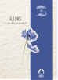

NOS SEMENCES
Découvrez nos trésors de biodiversité sur le shop!
CUCURBITACÉES
POTIMARRON FRANÇAIS — CUCURBITA MAXIMA
FABACÉES
HARICOT À RAMES BORLOTTO — PHASEOLUS VULGARIS
FLEURS
BLEUET BLAUER JUNGE — CENTAUREA CYANUS
SEMENCES DE PAYS
Semences de pays développe une production de semences reproductibles, rustiques et adaptées à une agriculture biologique proche des cycles de la nature, en collaboration avec les initiatives nourricières de proximité.
POINTS DE VENTE


 Chez Mamie
Chez Mamie
Rue des Rois 17
1204 Genève
|
Le Grainier
Route des Mines de Sel
1880 Bex
|
|
Le Topinambour
Avenue William-Fraisse 9
1006 Lausanne
|
Nouvelle Terre
Rue du Grand-Verger 12
1920 Martigny
|
|
Ferme du Joran
Chemin des Philosophes 15
1350 Orbe
|